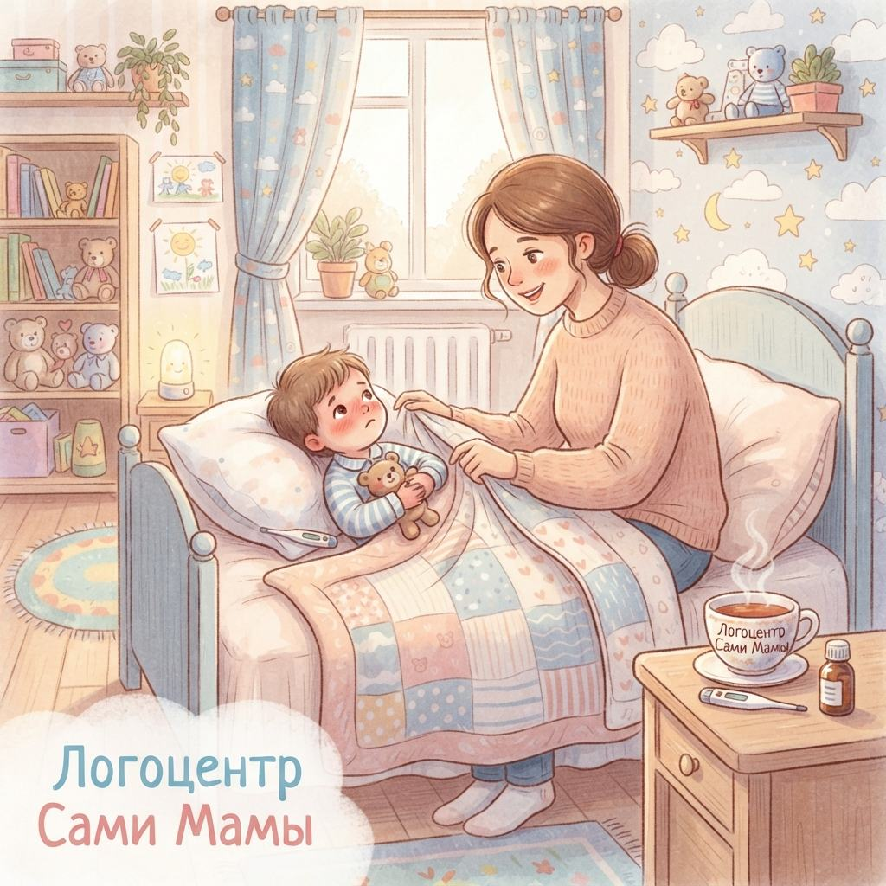

Первый год в саду: почему ребенок не вылезает из простуд и когда это закончится
2026-09-03

Первые месяцы в детском саду часто превращаются в бесконечную череду больничных. Ребенок ходит два дня, а потом неделю лечится, и этот круг, кажется, никогда не разорвется. Мама ловит себя на мысли, что дело в ней или в слабом здоровье малыша, и начинает искать волшебную таблетку. Но на самом деле все гораздо прозаичнее: это не чья-то ошибка, а закономерный процесс знакомства детского организма с новым миром.
Знакомство с новым вирусным миром
До сада круг общения ребенка был ограничен членами семьи и парой знакомых на площадке. Его иммунитет был настроен на очень ограниченный набор вирусов. Сад же — это настоящий перекресток инфекций: за один день малыш контактирует с десятками новых микроорганизмов, к которым у него попросту нет защиты. Это не признак слабости, а скорее интенсивный курс обучения для иммунной системы. Ей нужно время, чтобы создать антитела на новые штаммы.
Невидимый фактор: стресс и его последствия
Решение проблем с иммунитетом лежит не только в плоскости микробов. Адаптация к саду — это всегда стресс для нервной системы. Новый режим, чужие стены, расставание с мамой — все это требует колоссальных энергетических затрат. Организм ребенка направляет ресурсы на переживание тревоги, а не на защиту от болезней. Именно поэтому вирусы так легко закрепляются в ослабленном стрессе теле.
Когда наступает равновесие
Обычно иммунная система перестраивается и адаптируется к новым условиям в течение первого года посещения сада. Примерно через 6-9 месяцев количество эпизодов ОРВИ начинает заметно снижаться. У ребенка формируется собственный «каталог» вирусов, и новые атаки перестают быть для него неожиданностью.
Как сделать этот этап мягче
Полностью избежать болезней в адаптационный период не получится, но можно помочь ребенку справляться с нагрузкой быстрее. Ключевые моменты, на которые стоит обратить внимание, — это режим и психологическое состояние, а не витаминные комплексы.
- Избегайте совмещения стрессов. Если есть выбор, не начинайте сад в момент переезда или появления второго малыша в семье.
- Давайте ребенку время на восстановление. Не забирайте его из сада сразу после того, как спала температура. Дайте организму 2-3 дня, чтобы полностью прийти в себя, иначе есть риск сорвать новый виток болезни.
- Приоритет сну. В этот период важно укладывать ребенка спать раньше обычного. Качественный сон — это главный помощник в восстановлении иммунных сил.
- Снижайте интенсивность. В первые недели старайтесь забирать малыша пораньше, не оставляя на целый день, чтобы снизить уровень усталости.
Когда частота болезней становится тревожным знаком
Важно отличать норму от патологии. Если ребенок болеет часто, но легко выздоравливает, без осложнений, - это всего лишь этап становления иммунитета. Тревогу должны вызывать другие симптомы:
- Каждая простуда перерастает в осложнения (бронхит, отит, пневмонию).
- Температура держится дольше обычного (более 5-7 дней).
- Между болезнями ребенок не восстанавливается: не набирает вес, выглядит вялым.
В этих случаях стоит обратиться к врачу для дополнительной диагностики, но в большинстве ситуаций достаточно просто переждать сложный период.
Спокойствие вместо самобичевания
Знай: твое решение отдать ребенка в сад — правильное, даже если оно сопровождается частыми больничными. Это не наказание и не ошибка. Это просто этап взросления, через который проходят все дети. Относись к болезням не как к своей вине, а как к работе, которую детский организм должен выполнить самостоятельно. Твоя задача — не мешать и поддерживать.
Частые вопросы
Сколько в норме ребенок может болеть в первый год сада?
В первый год адаптации нормой считается до 10-12 эпизодов ОРВИ. Это связано с тем, что иммунитет ребенка встречается с большим количеством новых вирусов и учится на них реагировать.
Если я не отдам ребенка в сад, он не будет так часто болеть?
Скорее всего, нет. Просто встреча с большим количеством вирусов отложится на время школы, и адаптация пройдет там примерно с теми же симптомами.
Можно ли давать ребенку иммуностимуляторы, чтобы он реже болел?
Без назначения врача этого делать не стоит. Эффективность многих таких препаратов не доказана, а бесконтрольный прием может нарушить естественное формирование иммунитета.
Баркаева Елена, психолог и основатель логопедического центра "Сами Мамы"